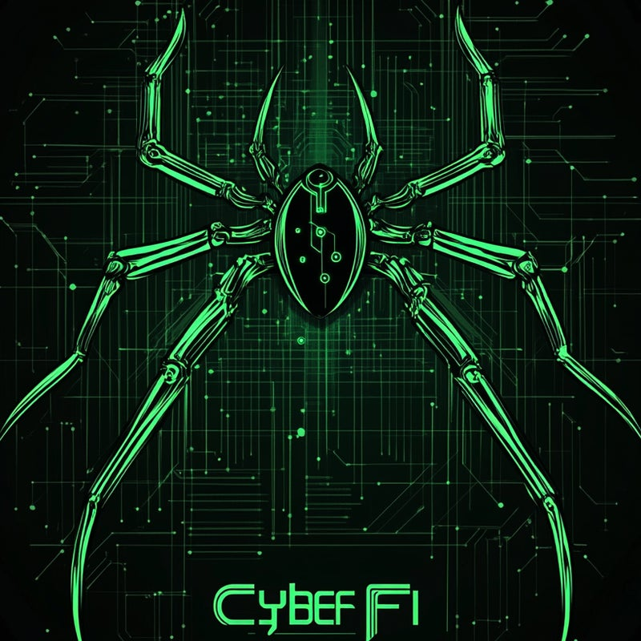

Formation & Sensibilisation
Pour vos besoins en formation et sensibilisation à la cybersécurité, je fais partie de CyberFidelis, une équipe d'experts – du débutant au confirmé – tous passionnés. Rejoignez-nous !
CyberFidelis
Experts en Cybersécurité & Sensibilisation

CyberFidelis organise régulièrement des sessions en direct pour sensibiliser le grand public aux enjeux de la cybersécurité. Des discussions interactives, des démonstrations pratiques et des conseils concrets pour se protéger au quotidien.
Des formations sur mesure dispensées par des experts du métier. Que vous soyez débutant ou professionnel confirmé, CyberFidelis adapte son contenu à vos besoins pour renforcer vos compétences en cybersécurité.
CyberFidelis collabore avec des experts reconnus du secteur pour mener des missions de conseil, d'audit et de sécurisation. Une approche terrain pour des solutions concrètes et efficaces.
Rejoignez l'élite patriotique de la cybersécurité, participez aux lives, et accédez à toutes leurs ressources !
Accéder à leurs liens